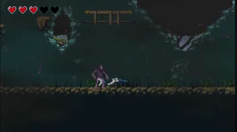

Project Case Study
Traces of the White Soul
A university 2D action platformer with three levels, enemies and boss encounters. My role combined QA leadership with level design and gameplay-system contributions.
Testing
I led quality assurance across the levels, enemies and boss encounters, using unit, integration and black-box testing to identify bugs, failure cases and gameplay issues.

My contribution
I contributed puzzle ideas, enemy placement and overall level layout. I also implemented a save/load system with Unity PlayerPrefs to store player position and soul amount, and coordinated voice acting for player characters and NPCs.